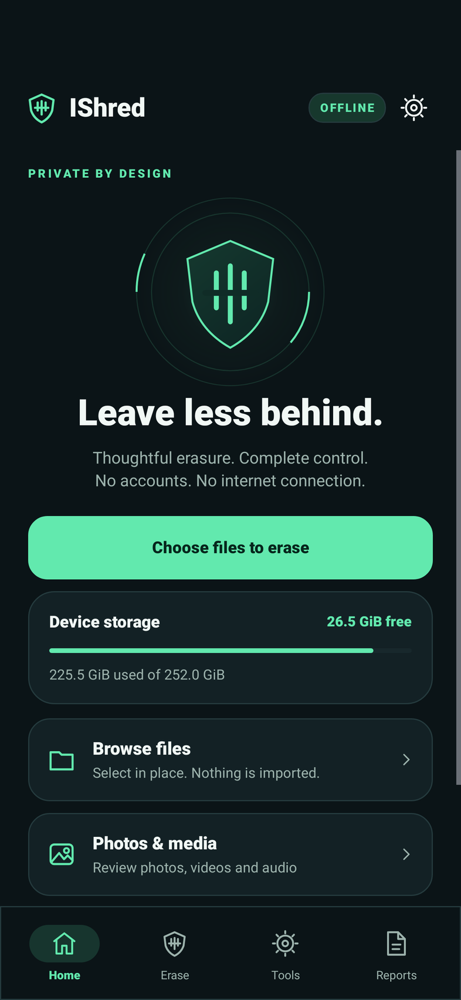
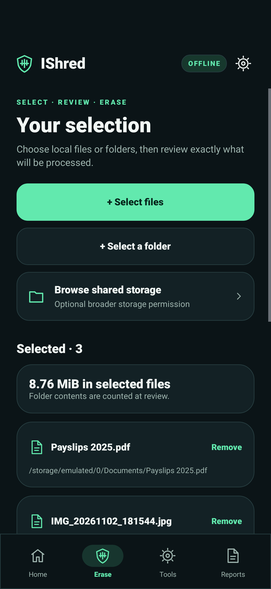
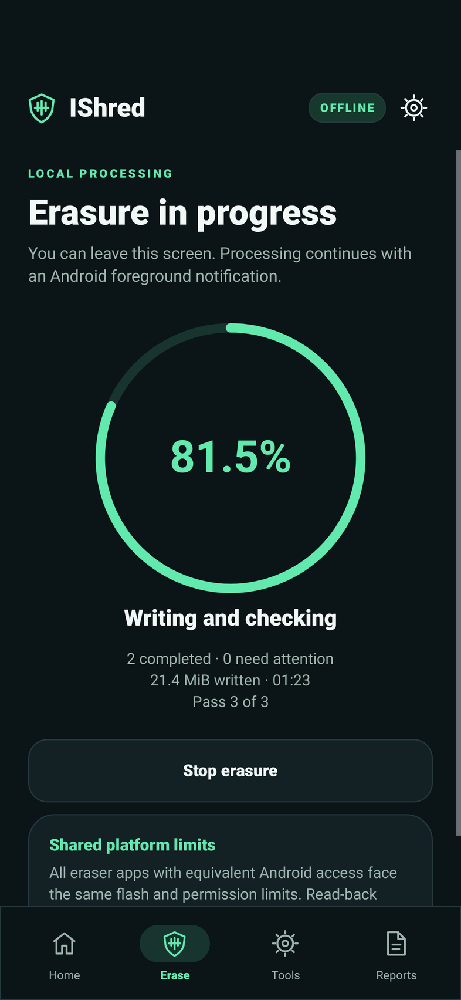
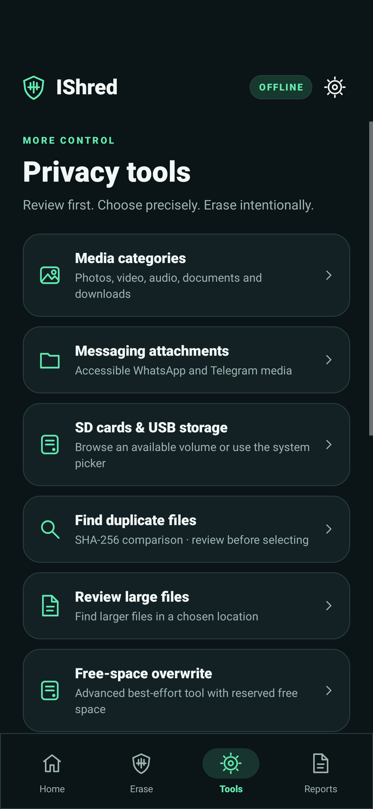
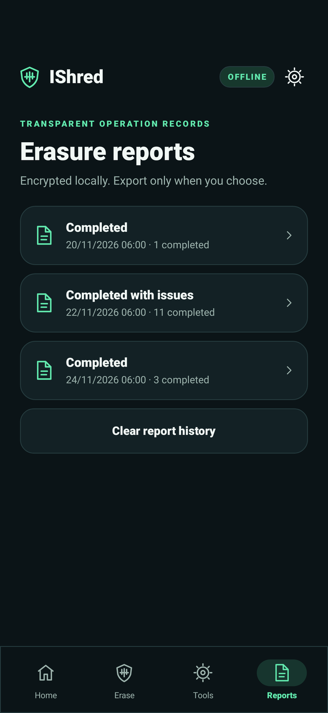
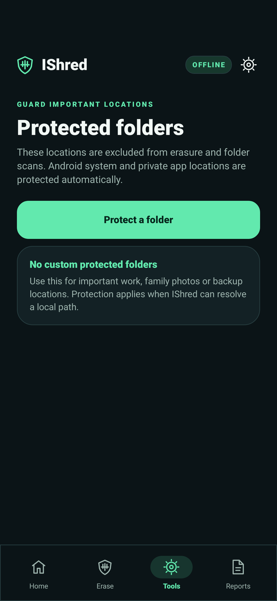
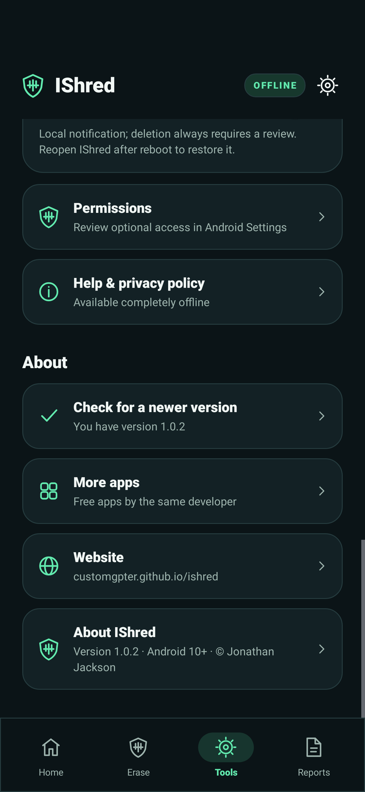
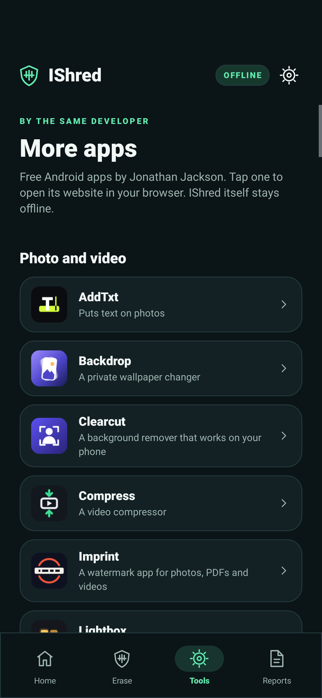
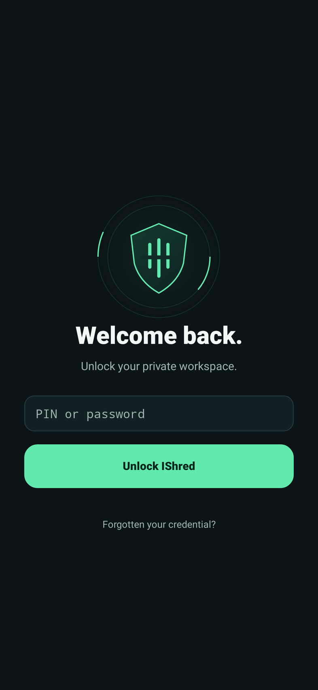
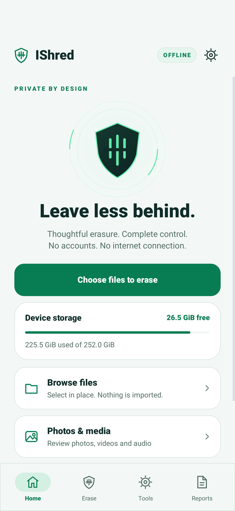

Leave less behind.
IShred erases the photos, videos, documents and folders you pick, where they already are. It writes over each file's contents before deleting it, so ordinary recovery tools have nothing to put back together.
You choose how: one random pass, fixed patterns, the classic multi-pass sets or your own sequence, with an optional read-back check of every byte it writes. Each session ends with a signed report. IShred has no internet permission, so nothing about your files can leave the phone.
Download for AndroidHow to install
- Version 1.0.2
- Android 10 or later
- 362 KB
Free, with nothing to unlock. No adverts, no account with the developer, no tracking. Compare or read the release notes.
Chrome may say the file might be harmful. It shows this for app files that do not come from Google Play. Choose Download anyway.

- No internet permissionIShred cannot go online at all.
- No advertsNone in the app and none on this site.
- Nothing to buyEvery method and every tool is free.
- No copies keptFiles are erased where they are; nothing is imported.
A look inside
These are the real screens, drawn from the app's own code with made-up files. Swipe or scroll sideways to see them all.









How it works
IShred works on files in their own folders through Android's file picker or its own file browser. Nothing is copied into the app.
Choose
Pick files or a whole folder, or browse photos, downloads, messaging attachments, an SD card or a USB drive. Protected folders are left out.
Review
See every file, its size and location, choose an overwrite method, then tick to confirm and hold the button for a second and a half.
Erase
IShred writes over each file, checks what it wrote if you asked, deletes it and keeps a signed record of exactly what happened.
Everything is in, and all of it is free
Nothing below is held back for a paid tier, because there is no paid tier.
Overwriting
- Eight methods
- One random pass, zeros, ones, complementary, three-pass, seven-pass, the 35-pass Gutmann set, or delete only.
- Your own patterns
- 1 to 50 random passes, or your own sequence of bytes and three-byte patterns.
- Read-back check
- Each block is written, flushed and read back. A mismatch stops that file and it is never just deleted instead.
- Free-space overwrite
- Fills the free space with random data and removes it again, keeping a margin you choose free.
Finding files
- Built-in file browser
- Search, sort by name, size or date, filter by type and select in bulk, with optional photo previews kept in memory only.
- Media and downloads
- Photos, camera files, videos, music, documents, downloads and thumbnail folders in a tap.
- Duplicates and large files
- Matching files found by size and SHA-256, and files over 25 MB, largest first. Nothing is ticked for you.
- SD cards and USB drives
- Any storage Android shows, through IShred's browser or the system picker.
Safe by design
- Review and confirm
- Tick to confirm, hold to erase, and type ERASE for big jobs.
- Protected folders
- Your own list of folders that can never be erased, as well as Android's system and app folders.
- Checks before writing
- A file that has changed, been swapped for a link or has more than one name is skipped.
- Stops when it should
- If the phone gets too hot or the battery drops below 15% unplugged, IShred stops and says why.
Your records
- Signed reports
- Each session's report is signed on the phone, so any later change to it shows.
- PDF and JSON
- Export a report to wherever you choose. File names are left out unless you switch them on.
- Presets and reminders
- Save a set of folders and a method, and an optional weekly reminder to review. Nothing is ever deleted on a schedule.
- Contacts and clipboard
- Delete chosen contacts, or clear the clipboard, when you ask.
Private by design
No internet at all
IShred does not hold Android's internet permission. It cannot send anything anywhere.
Nothing copied in
Files are erased where they are. IShred keeps no copy of any photo, video or document.
Encrypted records
Settings, presets and reports are encrypted with a key held in the phone's secure hardware, and screenshots are blocked by default.
Installing and updating
IShred is not on Google Play, so your phone asks a couple of extra questions the first time.
Download the app file
Tap Download on your phone. The file is called IShred.apk and is about 362 KB. If Chrome says the file might be harmful, choose Download anyway.
Allow the install
Open the file. The first time, Android asks you to allow your browser to install apps. Allow it, go back and tap Install. If Google Play Protect steps in, choose More details, then Install anyway.
Updating later
IShred never goes online, so it cannot check for updates itself. Settings, About, Check for a newer version opens the releases page in your browser. Install the new file over the old one: do not uninstall first, or your settings, presets and reports are lost.
Version 1.0.2, released 26 November 2026. See the release notes, or check your download.
Questions
Is IShred really free?
Yes. There is no paid version, no subscription and no adverts. Every method and tool is in the free app.
Is it on Google Play?
No. IShred is a personal project and is downloaded from this site as an Android app file. It needs Android 10 or later.
Can erased files be recovered?
IShred writes over the contents of each file before deleting it, so recovery apps that look for deleted files find only the new data. No app can promise more than that on a phone: flash storage moves data around inside the chip, and copies in backups, cloud services or other apps are outside any app's reach.
Do more passes make it safer?
Not on a phone. One random pass is the recommended choice. Extra passes take longer and wear the storage more, and they cannot reach the hidden areas of a flash chip. The multi-pass methods are there for people who are asked to use them.
What is the read-back check?
After writing each block, IShred reads it back and compares it with what it wrote. If they do not match, it stops on that file and reports it, rather than quietly deleting it.
Why does it ask for All files access?
Only for its own file browser, duplicate finder and large-file review, and only if you choose them. You can erase files without it, using Android's file picker.
Does it erase WhatsApp chats or other apps' data?
No. It can erase the photos and videos those apps save where other apps can see them, but not their private chat databases. No app with the same access can.
Will it wipe my whole phone?
No. IShred erases what you choose. To clear a whole phone before passing it on, back up what you need and use the phone's own factory reset.
What if I forget the app lock PIN?
There are no recovery codes. Use Android's Settings, Apps, IShred, Storage, Clear data. That removes IShred's settings and reports, not your files.
How do I update it?
Settings, About, Check for a newer version opens the releases page. Download IShred.apk and install it over the old one. Do not uninstall first.
Who made it?
IShred is made by Jonathan Jackson, an independent developer in the United Kingdom.
Erase it properly
Free, with no adverts and nothing to unlock. Made by the developer of several other free Android apps: see them all.